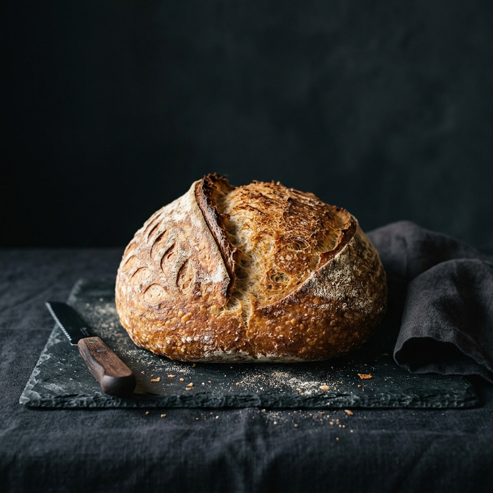
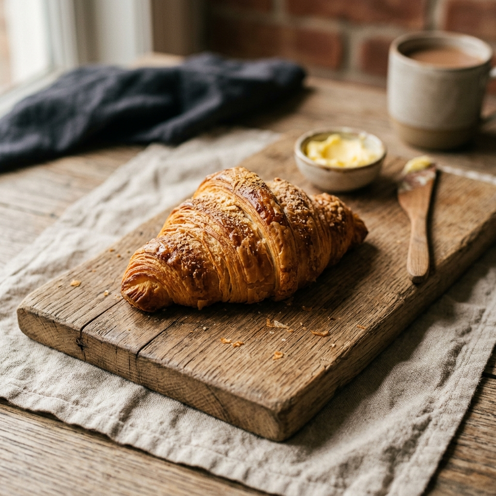
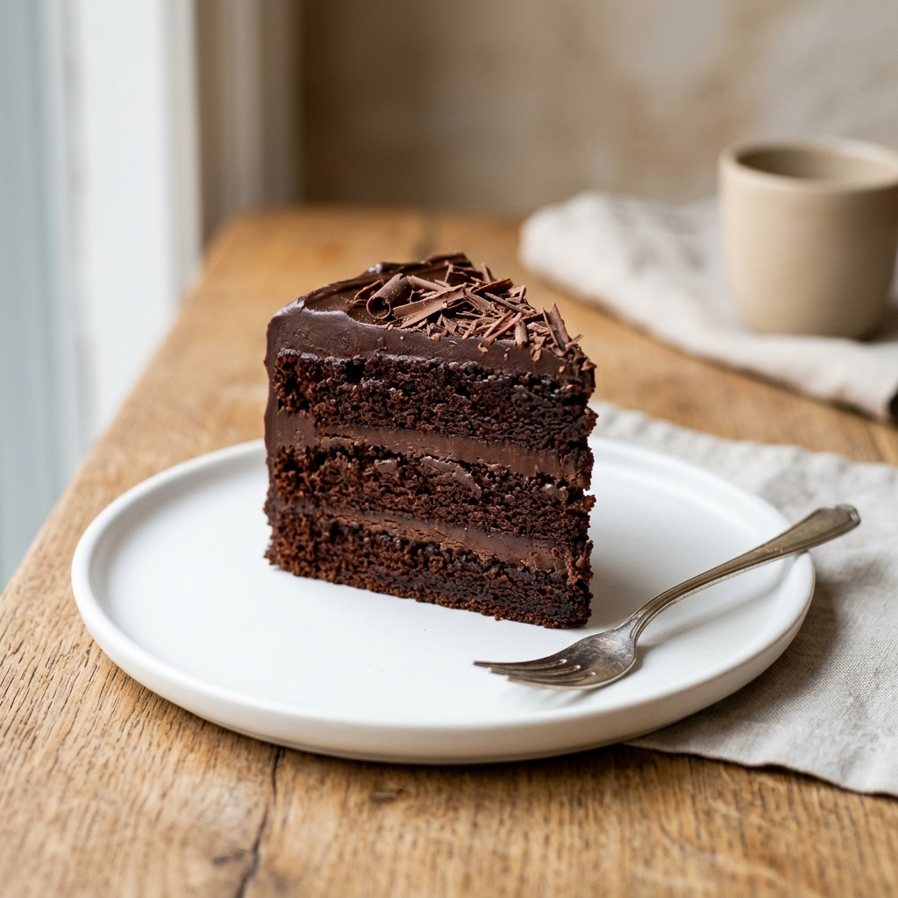
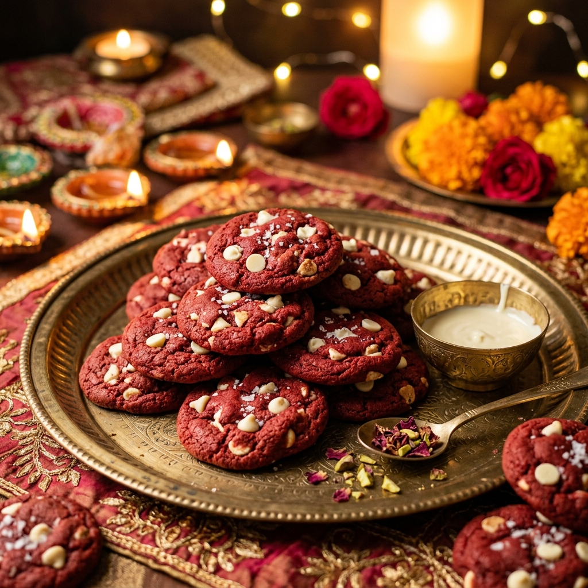
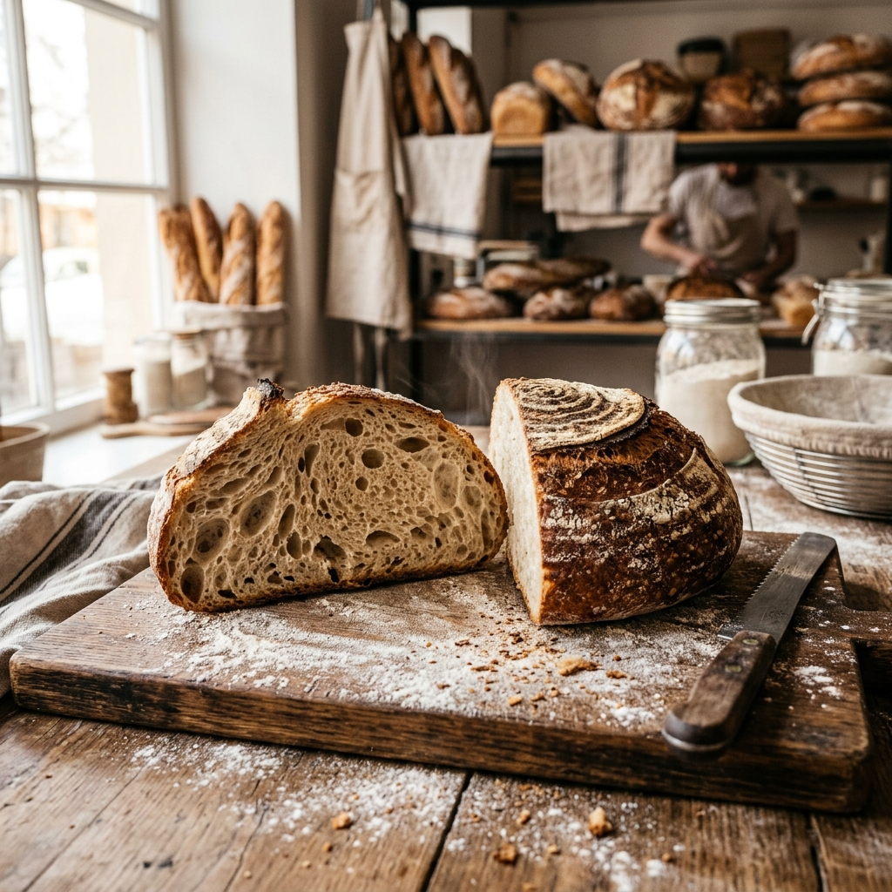

Your first sourdough: a no-fear guide
Everything we wish we knew before loaf #1 — starter care, stretch-and-folds, and why your oven needs steam.
Read more →Baking science, behind-the-scenes stories and recipes you can try at home.

Everything we wish we knew before loaf #1 — starter care, stretch-and-folds, and why your oven needs steam.
Read more →
A 3 AM photo diary of butter, folding and the flakiest math in baking.
Read more →
From Ratnagiri crates to mousse cakes in 48 hours — the journey of our most-loved seasonal bake.
Read more →
Brown butter, an overnight rest, and one weird trick with cornflour. Your cookies will never be the same.
Read more →
Reference photos, flavour pairing, lead times — a checklist that makes your dream cake real.
Read more →
Evening shelter runs, compostable boxes and e-bike deliveries — our planet-friendly playbook.
Read more →